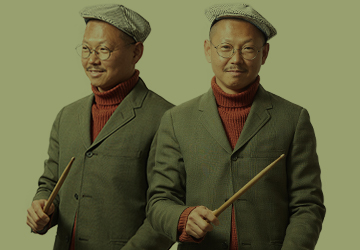

-
점과 점이 이어져 하나의 선이 되듯
가야금과 거문고라는 두 악기, 그리고
두 사람이 만나 음악으로 공명한다.
다르게 흐르던 시간은 맞물려 공존하고
이제까지 존재하지 않았던 소리와 감각은
그들의 손에서 손으로 끝없이 달음을 한다.
Chapter 02
인생이력
- 2018
- 2019
- 2020
- 2021
- 2022
- 2022
- '달음' 결성 ❬그- 달음으로❭
- 수림뉴웨이브 ❬음양, 완전한 균형❭
- 저니투코리안뮤직 저니루키 선정
- ❬음양시리즈 Ⅱ 공존 : 空存❭
- 1집 ❬Similar & Different❭ 발매
- 싱글 ❬달아가다❭ 발매
- 여우락 페스티벌 ❬두부의 달음❭
- K-Music Festival 초청
- 사우스뱅크센터 공연과 유럽 투어
- 미국 SXSW 공식 쇼케이스 초청
- 여우락 페스티벌 ❬네 개의 점 點❭
- 싱글 ❬Dot❭ 발매
- 2집 ❬Co-existence❭ 발매
- - - - - - -
- - - - - - -
- - - - - - -
- - - - - - -
- - - - - - -
- - - - - - -
우리의변곡점
혜영_ 가야금을 연주하시던 이모할아버지(최충웅) 덕분에 어렸을 때부터 자연스레가야금을 접했다. 부모님의 권유로 할아버지 밑에서 가야금을 6년 정도 배웠지만, 어딘가 모르게 나와는 잘 맞지 않는다고 느꼈다. 그러다 우연히 거문고 술대를 잡으면서 굉장히 색다른 기분이 들었고 연주가 재밌어졌다. 국립국악중학교 입학과 동시에거문고로 전공을 바꿨다. 그때부터 지금까지 오른손의 검지와 중지 사이에는 술대 자국이 붉게 새겨져 있다.
수연_ 9살에 방과 후 수업으로 가야금을 배우기 시작했는데, 처음엔 수업을 빠지기도 하면서 그다지 열성적이지 않았다. 그런데 3년쯤 지나자 실력이 늘어 공연하면 무대 중앙에 자리 잡아 주목받았고, 선생님도 음악에 재능이 있어 보인다는 얘기를 해주셨다. 조금씩 자신감을 얻었고 재미도 느끼며 입시까지 준비하게 됐고, 내 키보다 컸던 악기의 몸통이 어깨높이로 작아질 때까지 가야금과 함께하게 됐다.
달음(Dal:um)
혜영_014년 서울시청소년국악단에서 수연을 처음 만났는데, 단원으로 활동하면서도 인사만 하는 사이였다. 그런데 2017년에 내가 악장을, 수연이 부악장을 맡으면서 음악적인 대화를 많이 나눴다. 같이 하는 것들이 서로에게 점차 익숙해지면서 이듬해 '달음'이라는 듀오를 결성하게 됐다. '어떤 행동의 여세를 몰아 계속해나간다'라는 뜻의 그룹명에는 음악 활동을 계속하며 앞으로 나아가 보자는 우리의 다짐이 담겨 있다.
수연_듀오를 결성할 때 둘 다 창작 경험이 부족해서 작곡가 겸 기획자와 함께 해보면 어떨까 싶었다. 하지만 둘이서 일단 시작하고 보니 우리의 음악은 우리 두 사람의 연주 감각을 통해 만들어진다는 생각이 들었다. 당시에는 현악 실내악 또는 선생님들의 현악 앙상블 외에 거문고와 가야금만으로 이루어진 창작 작업이 없었기에 전통 현악기를 새로운 관점으로 보고 전에 없던 연주를 할 수 있겠다고 생각했다.
Similar & Different
달음 '탈' ©Journey to Korean Music
'달음'의 첫 정규 음반 발매를 계획할 무렵, 마침 예술경영지원센터에서 운영하는 '저니투코리안뮤직(Journey to Korean Music)' 사업의 저니루키로 선정됐다. 해외 진출을 위한 미팅 과정에서 독일 글리터비트 레코즈(Glitterbeat Records)의 대표에게 음반 발매를 제안받았다. 데뷔한 지 3년 만인 2021년 초 녹음을 진행해 6월에 ❬Similar & Different❭를 전 세계에 동시 발매할 수 있었다. 이 음반은 가야금과 거문고의 비슷하면서도 다른 지점들을 탐구하고, 그간의 작업을 녹여낸 음반이라고 할 수 있다. 레코딩 디렉터인 박경소 가야금 연주가의 제안으로 둘이 동시에 녹음하게 됐는데, 서로의 연주 합을 맞추는 자연적이고 사실적인 분위기를 담아내고자 했다. 대신에 녹음 일부를 수정하고 싶을 때는 타협을 거쳐 처음부터 다시 녹음해야 해서 시간적으로나 체력적으로 까다로운 과정이기도 했다. 또한 연주자와 작곡가의 관점을 합쳐 두 현악기의 매력을 극대화하며 다양한 음악을 만들려고 신경 썼다. 특히 타이틀곡 '탈'은 최지운 작곡가와 협업한 곡으로 가야금을 12현에서 25현으로 바꾸고 수정을 반복하느라 작업 기간이 오래 걸렸지만, 작곡의 구성력과 악기적인 특성을 균형감 있게 살린 곡이다.
달아가다
'달아가다' ©달음
2018년에 나온 곡인데 1집 음반에 수록할지를 고민하다가, 정규 음반에는 가야금과 거문고로만 구성된 곡을 넣고 싶어서 따로 싱글 음반을 발매했다. 산조는 전통 현악기 연주자들이 중요하게 생각하는 장르이다. 우리의 산조가 누구에게나 편하게 들리길 바라는 마음으로, 최옥삼류 가야금 산조와 신쾌동류 거문고 산조의 긴 산조 가락을 엮어 기타와 함께 재구성했다. 최덕렬 작곡가는 처음에 곡의 의도를 듣고 무척 어려워했다. 하지만 "그게 쉬운 일이었다면, 그 속에서 아무런 즐거움도 얻을 수 없었을 것이다. 그러니 계속 그림을 그려야겠다"라는 고흐(Vincent van Gogh)의 글귀를 인용해, 음악이 우리에게 어떤 의미인지를 전달하자 공감하며 곡을 완성해냈다. 호흡과 장단의 음악인 산조를 기타와 함께 서양음악처럼 합주하는 건 생각보다 꽤 힘든 일이었고, 같은 선율을 거문고와 가야금으로 합주하거나 각각의 산조를 다른 악기로 연주하는 건 만만치 않은 일이었다. 하지만 고흐의 말대로 어려움 속에 즐거움도 많았다. 무엇보다 앞으로 우리가 만들 음악에 대한 기대를 품게 만든 곡이기도 하다.
기억에 남는 무대
❬두부의 달음❭, ❬네 개의 점 點❭ ©국립극장
'2021 여우락 페스티벌'에서 선보인 ❬두부의 달음❭은 신선한 경험이었다. 이 공연은 연주자가 직접 두부를 만들면서 연주하는 프로젝트로, 실제로 유럽 등에서 '두부 프로젝트'를 진행해오던 박우재 디렉터의 아이디어로 기획됐다. 그는 '달음'의 음악적 색깔이 두부가 만들어지는 느림의 미학과 잘 어울린다고 말했다. 우리는 두부를 만들며 연주하기를 약 한 달 동안 연습했고, 무대에서 관객들의 오감을 자극하며 두부에서 영감을 받은 곡도 선보일 수 있었다. '2022 여우락 페스티벌'에서 공연한 ❬네 개의 점 點❭은 같은 악기 편성이지만 전혀 다른 음악색과 창작 방식을 지닌 '리마이더스'와 작업하면서 또 다른 시선으로 악기적 특색과 조화를 이뤄낸 시간이었다. 한편 'K-Music Festival'의 초청으로 런던 사우스뱅크센터에서 펼친 무대는 현지 관객의 뜨거운 반응과 「송라인즈(Songlines)」 등 해외 매체의 호평에 힘입어 유럽 투어를 이어가게 만든 첫 해외 공연이라 더욱 의미가 깊다.
Co-existence
❬Co-existence❭ ©김재우
지난해 12월 서울돈화문국악당에서 '공존(共存)'을 주제로 쇼케이스를 열었는데, 팬데믹이라는 혼란스러운 시기를 겪으며 고민한 '같이의 가치'에 대해 되돌아보는 무대였다. 2집 음반 ❬Co-existence❭는 올해 9월쯤에 발매될 예정이다. 음반 제목에서도 알 수 있듯이, 이번 음반에는 나와 너라는 존재 그리고 우리가 함께 살아가는 것에 대한 이야기를 담았다. 1집 음반과 달리 전곡을 직접 작곡함으로써 '달음'의 세계관이 잘 드러나는 작품이다. 타이틀곡 'Dot'은 지속음이 짧아 '점' 악기로 불리는 가야금과 거문고의 특성에 기반한 곡으로, 앞으로 나아가는 점들이 모이고 펼쳐지는 모습을 그려냈다. 또한 '살아있는'이라는 곡에서는 거문고 연주에 활 주법을 연구해 사운드 질감을 풍부하게 만들려고 노력했다. 'Pandemonium', '도드리', 'Poison and Antidote', 'In the Deep (with Y.Sookyoung)' 등 지난 쇼케이스에서 공개한 곡 외에도 몇 곡을 더해 수록할 계획이다. 누구나 공감할 수 있는 관계에 대한 고민, 사람과의 조화, 삶에 관해 표현한 곡들을 들으며 살아있음에 대해 생각해보면 좋겠다.
우리의 음악 세계
우리는 국악기를 연주하지만, 장르에 갇히지 않고 사람들의 감각을 일깨울 수 있는 음악을 하고 싶다. 그동안 거문고와 가야금의 고유한 매력으로 음악에 다가갔고, '달음'이 두 연주자의 조합이어야 하는 이유를 찾으며 스스로 '음양'과 '공존'이라는 화두를 던졌다. 지금까지 서로의 다름을 알아보고 균형을 맞추기 위해 서로에게 거울이 되는 시간을 거쳤다면, 이제는 고개를 들어 세상을 보려 한다. 그리고 다양한 사람들과 어울리며 살아가는 삶과 음악으로 한 걸음 나아가고 싶다
Chapter 03
개인 취향
캐릭터 & 포지션
혜영_STP와 ISTJ를 왔다 갔다 하는데, 아마도 수연과 함께할 때 일정 관리 면에서 좀 더 계획적으로 움직여서 그런듯하다. 빠른 일 처리를 원하지만 말수가 적어서일까. 둘 다 내향적이지만 내가 더 조급한 성격이면서도 차분한 편이다. 작업에 있어서는 보통 수연이 아이디어를 내면 내가 가지치기해서 발전시키곤 한다. 다행히 같은 T여서 서로 공감받지 못해 서운한 일은 없다.
수연_INTP라서 사실과 경험에 초점을 맞추는 혜영과 다르다고 느낄 때가 많다. 특히 대화할 때 둘의 차이가 두드러지는데, 내가 영감에 의존해서 설명하면 혜영은 모호하게 들린 부분에 대해 다시 구체적으로 얘기해달라고 한다. 성향은 다르지만 취향이 비슷해서 서로가 생각하는 음악적 분위기가 맞고, 그때그때 하고 싶은 것들이 잘 통하는 것 같다.
영감의 원천
혜영_작업의 모티브는 다양하다. 길을 걷거나 음악을 듣는 등 일상적인 것에서 자극을 많이 받고, 하고 싶은 이야기가 갑자기 떠오르곤 한다. 그래서 해보고 싶은 음악이 많은데, 혜영과 자주 대화하고 생각을 공유하며 음악을 만들고 있다. 일례로 2집 음반의 수록곡인 'Pandemonium'은 록 밴드 공연을 보고, 우리도 록 음악에 담긴 사납고 혼란스러운 정서를 표현해보자는 생각으로 나름의 거친 사운드를 낼 수 있는 방법을 찾다가 만든 곡이다. 롤 모델은 박경소 가야금 연주가이다. 그가 연주하는 음색은 물론 가야금의 특성을 드러내면서도 현대적인 음악을 창작하는 역량을 좋아한다. 최근에는 필립 글래스(Philip Glass)나 막스 리히터(Max Richter) 같은 작곡가의 미니멀리즘 음악을 들으면서 영감을 얻기도 한다.
수연_어떤 주제가 있으면 관련된 정보를 깊이 파면서 떠오르는 생각들을 이미지화한다. 창작의 이유를 분명히 이해해야 음악으로 소화해낼 수 있는 편. 거문고보다는 다른 악기, 미술 전시 같은 다른 예술 장르에서 오는 자극을 크게 느낀다. 창작할 때는 서로가 받아들이는 범위에서 여러 갈래를 만들어 좋은 것을 선택하려고 하는데, 손에 익은 주법에만 얽매이지 않으려고 주로 사보 프로그램을 사용해 작업한다. 그러나 곡의 콘셉트에 따라 여러 작업 방식을 취하고 있다.
취미 생활
수연_ 쉬는 동안에 일주일은 가볍게 두문불출할 수 있는 '집순이'다. 이미 쉬고 있지만 더 격렬하게 쉬기 위해 아무것도 하지 않는 게 좋다. 그러다 심심하면 손만 까닥해서 유튜브·넷플릭스 영상을 보거나 좋아하는 음악을 듣는다.
혜영_ 취미는 꽂히는 게 있을 때마다 다르다. 해외 투어 전에는 종목을 바꿔가며 운동을 즐겼다. 여행을 좋아해서 떠나야 할 때라는 느낌이 들면 오래 생각하지 않고 바로 떠난다. 혼자서도 잘 돌아다니고 캠핑을 하기도 한다. 연습실이 지하라 탁 트인 곳에서 기분을 환기하는 것 같다
추천할 만한
혜영_ 여행을 추천한다. 무엇에도 얽매이지 않고 어디론가 향하고 싶은 마음대로 움직여보는 것이다. 여행지에서는 시장을 즐겨 다니는데, 지역만의 독특한 분위기를 느끼고 사람들의 모습을 구경하는 재미가 있다. 사람 많은 곳으로 따라가다 알게 된 맛집도 좋아한다.
수연_ 운동을 아예 안 했는데 살기 위해 필라테스를 시작했다. 악기를 오래 연주하다 보니 자세가 틀어진 곳이 많아서 교정을 하는 셈이다. 전과 비교해 확실히 몸속이 제대로 채워졌다는 느낌이 든다. '최애 루틴'은 오전에 운동을 끝내고 아이스 라떼 한 잔을 마시는 것.
Chapter 04
현재의 만족도
현재의 만족도
혜영_STP와 ISTJ를 왔다 갔다 하는데, 아마도 수연과 함께할 때 일정 관리 면에서 좀 더 계획적으로 움직여서 그런듯하다. 빠른 일 처리를 원하지만 말수가 적어서일까. 둘 다 내향적이지만 내가 더 조급한 성격이면서도 차분한 편이다. 작업에 있어서는 보통 수연이 아이디어를 내면 내가 가지치기해서 발전시키곤 한다. 다행히 같은 T여서 서로 공감받지 못해 서운한 일은 없다.
수연_10점 만점에 7점. 음악을 만들 때는 이렇게 살아도 되나 싶은 정도로 고통을 느끼다가, 막상 지난한 과정이 끝나고 공연에서 좋은 반응을 얻으면 언제 그랬냐는 듯이 힘든 일들이 한 번에 보상받는 기분이다. 얼마 전에 중요한 작업을 다 끝내면서 체력적으로도 정신적으로도 소모가 컸지만, 결국 해냈다는 성취감과 더불어 내가 조금 더 성장했다고 느낀다. 내가 느끼는 걸 음악으로 표현할 수 있는 것만으로도 참 감사한 일이다. 이런 시간을 되풀이하며 고통과 기쁨 사이에서 만족감의 적정선을 찾는 게 예술가의 삶인 듯싶다.
전통의 한계와 가능성
수연_거문고는 묵직한 저음과 술대를 이용한 스트라이킹에서 오는 쾌감이, 가야금은 고운 음색을 바탕으로 섬세함과 대담함을 오가는 변화무쌍함이 매력적인 악기다. 두 악기 모두 부드러운 음악부터 강렬한 음악까지 다채롭게 표현할 수 있어 '달음'의 음악도 감성적인 동시에 파워풀한 특색을 지닌다. 다만 12현 가야금은 거문고보다 음량이 작고 25현 가야금은 음량이 커서 마이크가 없는 공연장에서는 서로의 호흡과 소리를 좇으려 노력한다.
혜영_처음 창작할 때는 거문고와 가야금이 한계가 많다고 생각해 두려움 반 설렘 반이었다. 지금은 오랜 편견을 깨고 새로운 감동을 줄 수 있는 조합이라고 느껴진다. 팀을 결성할 당시에 주변에서 "두 악기로 다양한 장르를 다 해볼 수 있겠다"라는 말을 들어도 와 닿지 않았는데, 작업을 하나씩 해나갈수록 뭐든 만들 수 있겠다는 가능성을 봤다.
계획 그리고 희망 사항
듣기 좋은 음악, 들으면 계속 찾게 되는 음악을 만들고 싶다. 실험적이고 독특한 사운드를 음악에 접목할 수도 있지만, 악기의 정체성을 유지하며 가야금과 거문고의 매력을 진하게 맛볼 수 있는 음악을 꾸준히 만들고 싶다. 2집 음반 발매에 앞서 수록곡 가운데 'Dot'을 1월에 싱글 음반으로 발매하고, 'Pandemonium'의 뮤직비디오도 선보일 예정이다. 6월부터 9월까지는 다양한 국가와 공연장의 해외 투어를 계획 중이라 우리의 전통 현악기가 낯선 관객들과 만날 기회가 늘 것 같다
우리의 키워드
음양
Dot
Co-existence
산조
거문고
여성 듀오
점
탈
가야금
공존
달아가다
조화
공진단 REC• 는 공진단의 처방으로 복용하는 예술로, 매월 다양한 예술인들의 인터뷰와 라이브 공연을 만나실 수 있습니다!
# 관련된 다양한 기사 글

굿+록? Good Luck!
드러머·보컬 김반장

피리로 다시 만난 세계
삐리뿌(BBIRIBBOO)
점 긋고,점 잇다
달음(Dal:um)


Copyright 2023 Korean Traditional Performing Arts Foundation. All Rights Reserved.